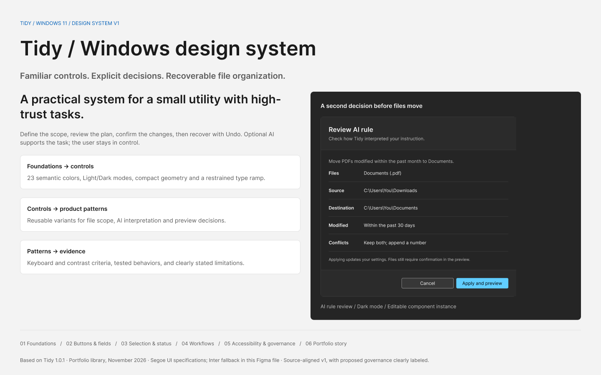
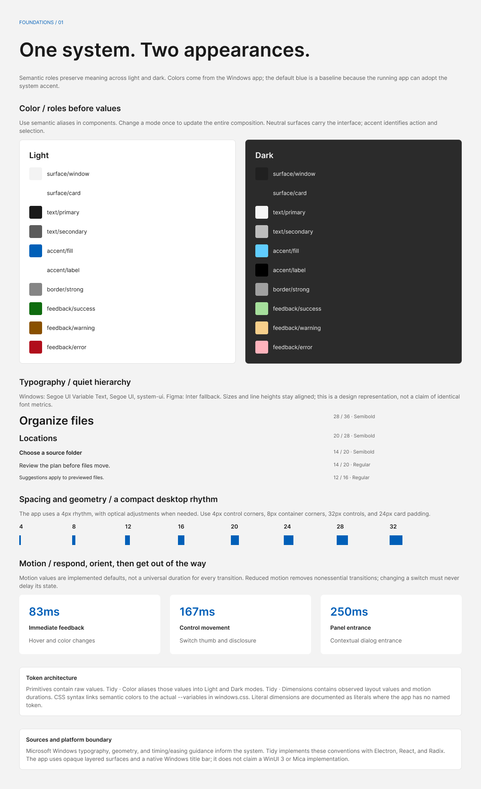
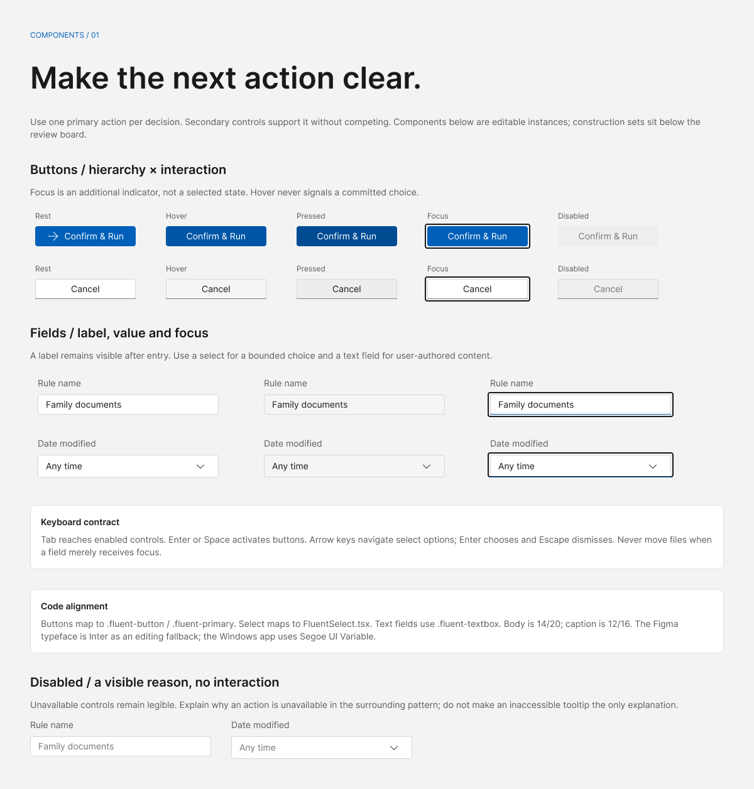
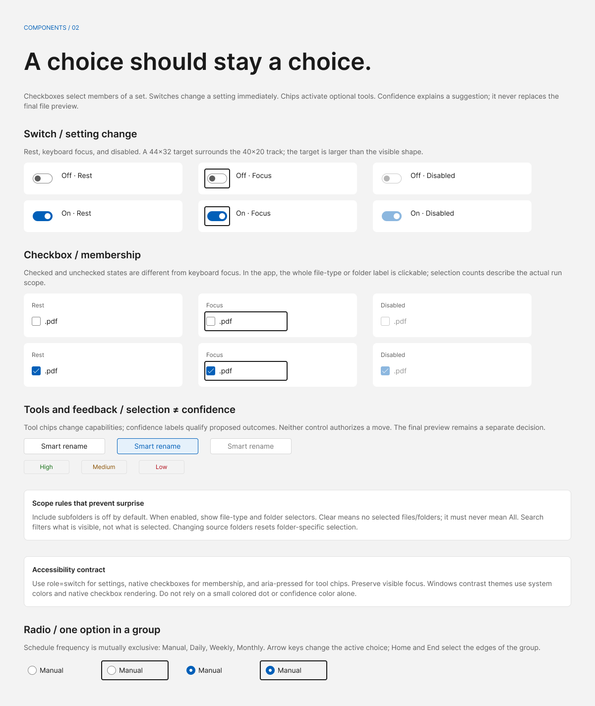
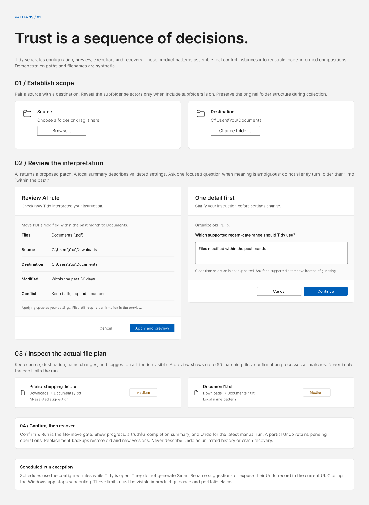
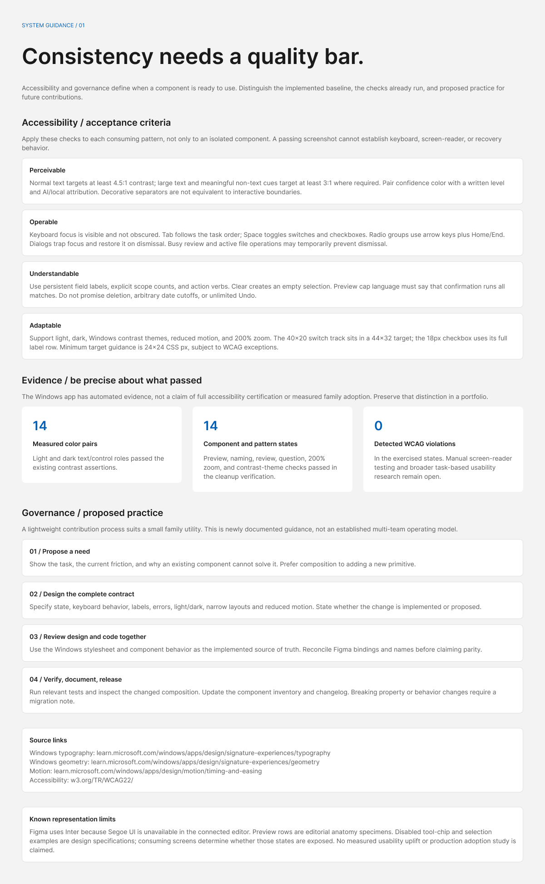
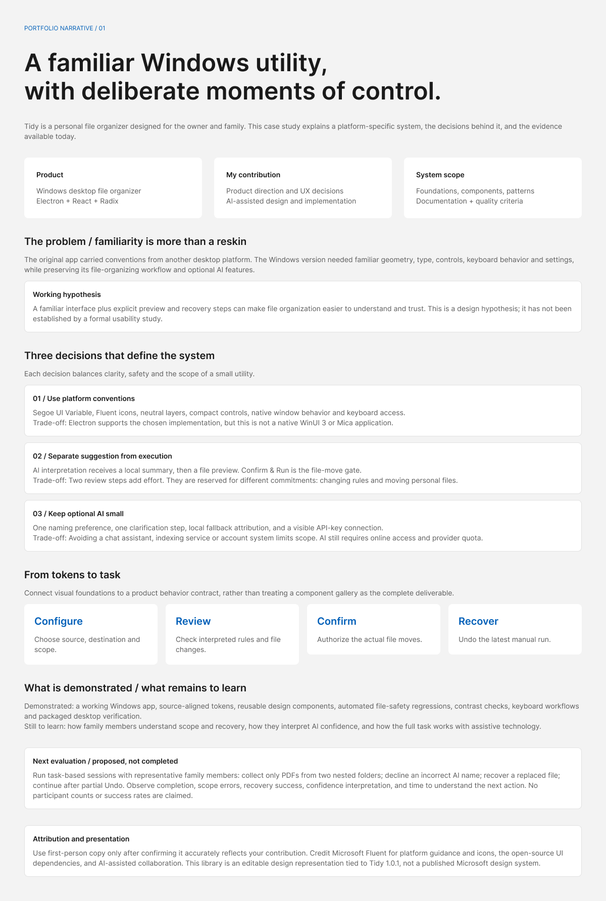

surface/window
#f3f3f3Windows 11 / Product-specific design system
Tidy brings scope, review and recovery into a simple file-organizing workflow. This system connects the interface to the decisions it helps people make.

Exported from the editable Figma library. Inter is the Figma editing fallback; this reference uses the Windows system font.
The intended users are the owner and family. These principles are design decisions and working hypotheses, not findings from a formal usability study.
Show what is selected. Clear means None, and search never quietly changes selection.
Accepting AI-interpreted settings is different from authorizing file changes.
Recovery belongs in the completion experience, alongside its actual limitations.
Windows typography, geometry, keyboard input and settings reduce needless learning.
Optional AI supports the workflow. It does not bypass the user’s review, disguise local filename patterns as AI, or promise capabilities the app does not have.
Colors map to the actual Windows stylesheet. Switch the theme to inspect the alternate values; copy a semantic CSS token rather than selecting a color by appearance.
#f3f3f3#ffffff#fafafa#1a1a1a#5c5c5c#005fb8#ffffff#e5f1fb#e1e1e1#d6d6d6#858585#ffffff#f5f5f5#ededed#0f6c0f#895000#b10e1c#1a1a1aThe blue accent is a documented baseline. The running app can adapt to the Windows accent. Faint decorative borders are not the same as the stronger cues used for interactive boundaries.
Segoe UI Variable Text → Segoe UI → system-ui. Five app roles, with restrained weight. The 48px document heading is presentation typography, not an application text role.
Control corners / container corners. Keep the distinction visible.
Standard control height. Switch and checkbox targets include their surrounding label or hit area.
Milliseconds for feedback, control motion, and entrances. Respect reduced motion.
Dimensions reflect observed code values, including optical exceptions. The Figma Dimensions collection does not imply every production literal already has a named CSS token.
Explore reusable control specimens and their code mappings. These documentation controls are safe local examples; they do not change the app or move files.
11 component families shown
One primary action per decision; keyboard focus is distinct from selection.
API
Hierarchy · State · Label · Show icon · Icon
Code mapping
src/styles/windows.css
.fluent-button / .fluent-primary
Keep a persistent label. Explain errors next to the field.
API
State · Label · Value
Code mapping
src/styles/windows.css
.fluent-textbox
Bounded options; arrow navigation, Enter selection, Escape dismissal.
API
State · Label · Value
Code mapping
src/app/components/controls/FluentSelect.tsx
FluentSelect
Immediate setting change; 40×20 track inside a 44×32 target.
API
Checked · State
Code mapping
src/app/components/controls/FluentToggle.tsx
FluentToggle
Membership; the full label row is clickable. Clear means None.
API
Checked · State · Label
Code mapping
src/app/components/sections/SourceChoices.tsx
SourceChoices
One active choice. Arrows wrap; Home and End reach the edges.
Manual runs use the normal preview.
API
Checked · Focus · Label
Code mapping
src/app/components/BottomPanel.tsx
Frequency radiogroup
Use aria-pressed. This changes capability without running a job.
API
State · Label
Code mapping
src/styles/windows.css
.fluent-chip
High, Medium and Low qualify a suggestion; text carries the meaning.
API
Confidence
Code mapping
src/app/components/PreviewSheet.tsx
FileRow confidence
Choosing a source or destination changes scope, not files.
Choose a folder or drag it here
API
State · Label · Path or hint
Code mapping
src/app/components/FolderCard.tsx
FolderCard
Clarify, review, then apply settings. File moves still require preview confirmation.
Fixed walkthrough · synthetic data · no files, keys or AI calls
API
Stage
Code mapping
src/app/components/AiRuleReviewDialog.tsx
AiRuleReviewDialog
Show original identity, destination and attribution; Figma is an anatomy specimen.
Downloads → Documents / txt
AI-assisted suggestion · original: Document1.txt
API
Source
Code mapping
src/app/components/PreviewSheet.tsx
FileRow
Figma includes all listed variants and editable properties. Preview rows are editorial anatomy specimens. Disabled tool and selection states are design-spec coverage; consuming screens determine availability. Native HTML selects and checkboxes in this reference are documentation examples, not replacements for the app’s Radix implementation.
The design system connects controls to a file-safety workflow. Each step has a clear commitment, an escape route where appropriate, and a truthful description of what happens next.
Choose source, destination and scope.
Check the interpreted rule and actual file plan.
Authorize the file moves in the preview.
Undo the latest manual run where needed.
“Move PDFs modified within the past month to Documents.”
A local summary describes validated settings. An immediate instruction opens the file preview after acceptance. The Advanced editor applies settings without starting a run.
Walk through the fixed, synthetic example
Include subfolders is off by default. When enabled, reveal folder/type selectors. Each folder checkbox selects files directly inside that folder; deeper folders are separate choices. Searching options changes visibility, not membership.
Ask one focused question for ambiguity. Apply validated settings only after review. Preserve the separate Confirm & Run gate. Label AI and local suggestions accurately; date-first names use file modification metadata.
Preview shows up to 50 matching files. Confirmation processes all matching files, with AI suggestions restricted to the previewed files. Never imply the display cap limits the run.
Undo retains the latest manual record and pending partial reversals. Replacement backups restore old and new versions. It is not unlimited history or crash recovery. Scheduled runs currently do not expose their Undo record or generate Smart Rename suggestions.
Use WCAG 2.2 AA as a design and test target. Automated results describe the exercised states; they do not establish complete conformance or replace assistive-technology testing.
The app’s existing light/dark text and control assertions passed.
Preview, naming, review, clarification, zoom and contrast-theme checks passed.
Within those exercised app states. Broader screen-reader and usability evaluation remains open.
| Concern | Acceptance criterion | How to check |
|---|---|---|
| Contrast | 4.5:1 normal text; 3:1 large text and applicable non-text cues. | Measure actual foreground/background roles in both appearances. |
| Input | Visible, unobscured focus; names and checked/selected states. | Complete the task with Tab, Space, Enter, arrows and Escape. |
| Dialogs | Focus containment and restoration; an available next action. | Check opening, cancellation, errors and temporary busy states. |
| Targets | 24×24 CSS px minimum subject to WCAG exceptions; larger label rows where practical. | Inspect the hit area, not only the visible checkbox or switch track. |
| Adaptation | 200% zoom, reduced motion, contrast themes and light/dark. | Preserve reading, action access and status communication. |
The application’s earlier full-screen audit also covers 18 states, with filter-popup landmark advisories retained. No usability uplift, adoption metric, or accessibility certification is claimed. This documentation site has its own separate validation record.
A proposed contribution process for a small utility, not an invented multi-team operating model. Prefer composition and repair before adding another primitive.
Name the user task, current friction and why an existing component cannot solve it.
Include state coverage, keyboard behavior, copy, failure/recovery, theme, resizing and reduced motion.
Use the app as the implemented source of truth. Resolve Figma/code drift and identify intentional representation gaps.
Inspect the affected composition, run relevant checks, update the inventory and document breaking property or behavior changes.
Suggested readiness: Proposed → Specified → Implemented → Verified. The Figma library is a specified design representation; implementation verification is scoped to the app evidence above.
A factual case-study draft covers product context, contribution, trade-offs and validation. Review first-person copy before publication so it accurately represents your own role.
A dedicated Windows utility needed familiar controls and conventions while preserving its file-organizing workflow. Scope and recovery needed to be understandable before personal files changed.
Connect foundations to product behavior: explicit scope, separate interpretation and execution, honest AI attribution, and a completion experience with recovery.
Two review steps add effort, but support different commitments: changing configuration and moving files. The implementation follows Windows conventions within Electron rather than claiming a native WinUI conversion.
Observe representative family members collecting selected PDFs, declining an incorrect AI name, recovering a replacement and continuing after partial Undo. Measure scope errors, completion, recovery success and confidence interpretation. This evaluation is proposed, not completed.






The visual reference works locally without Node.js, accounts or an API key. Keep this folder together when sharing the HTML and its exported sheets. No publishing or production-app changes are included.